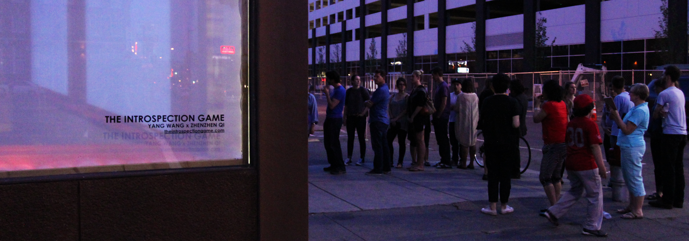
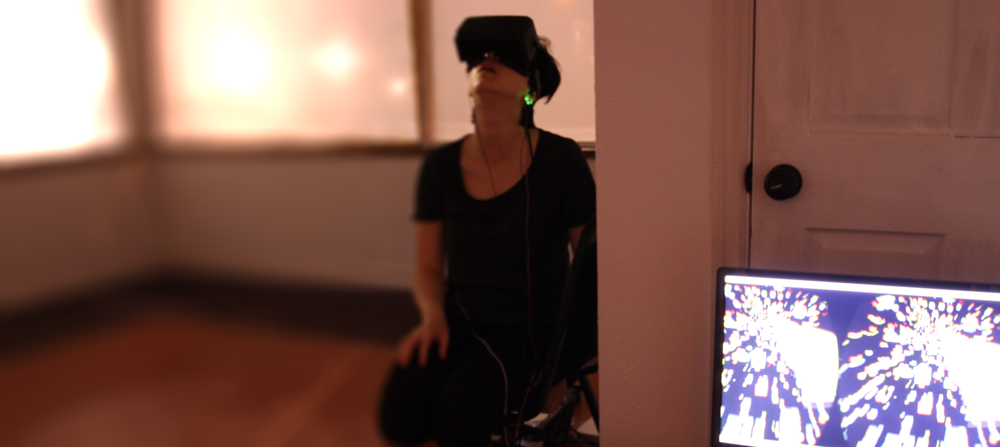

And what is the purpose of writing music? … The answer must take the form of a paradox: a purposeful purposelessness or a purposeless play. This play, however, is an affirmation of life—not an attempt to bring order out of chaos nor to suggest improvements in creation, but simply a way of waking up to the very life we’re living, which is so excellent once one gets one’s mind and one’s desires out of its way and lets it act of its own accord.
OPENING THURSDAY, MAY 21st, 8 - 11PM, THE LABORTORY will present an interactive, experimental art installation that employs novel technologies to mediate, augment and echo our experience of the world around us. The effect is trans-sensory—as breaths become sunlights and oceanwaves—as heart beats become both audible and visible. The result, is a strange new narrative manifested by one's own body.
THE INSTROSPECTION GAME, which new media artists YANG WANG and ZHENZHEN QI developed at the LABORATORY incubator, is an investigation into a new form of self speculation. Spreading across the floor in the rear of the gallery, a networked group of 48 speakers – all containing pools of water – are connected via Bluetooth to electroencephalogram (EEG) headsets, which are worn by up to two visitors at once. The EEG headsets track changes in visitors’ brainwaves, and the data is sent to a computer, where custom-written code is used to calibrate volume, pitch and panning, and translate those values into sound. The audio output is played through the speakers, causing distinctive ripples and vertical spray in the trays of water resting atop each speaker. The result is an audio-visualization of participants’ emotions, with the potential to see the real-time synchronization of individuals’ brain activity as they respond to neurofeedback. Colin Harrington and Amar Lal contributed to Eunoia II as an audio engineer and a sound programmer, respectively.
 Opening ReceptionRaised in a buddhist family, Yang received Aesthetics Design training at Beijing Science and Technology University. An Applied Mathematician hailed from Berkeley, California, Zhenzhen conducted behavioral science research, focusing on biased decision making process.
In 2013, the two met at the Interaction Design program at Tisch School of Art in New York City, and embarked on a journey of cross-pollinating Art, Science, and Technology.
The duo quickly became fascinated by employing new media technologies such as mindwave sensor, breath sensor, and Virtual Reality headsets to create alternative experiences that’s slightly surreal, where patterns are shifted, expectations are removed, and participants start to become aware of their less conscious self.